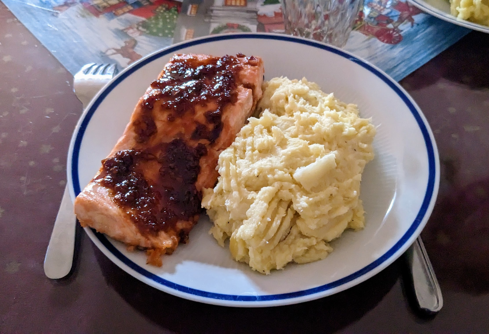

Saumon aux mandarines

Ici avec une purée de panais
Pour 4 personnes :
- 4 pavés de saumon avec leur peau
- Deux mandarines
- Une gousse d'ail
- Un pouce de gingembre
- Une bonne cuillère à soupe de sucre brun
- Deux cuillères à soupe de sauce soja
- Une petite cuillère à café de sriracha
- Une petite cuillère à café de vinaigre de riz
- Sel, poivre, huile d'olive
- Faire chauffer de l'huile d'olive dans une poêle à feu fort, saler et poivrer le saumon.
- Quand l'huile est bien chaude, faire revenir les pavés de saumon côté peau 2 minutes, juste pour que la peau devienne un peu croustillante. Si on est pas trop confiant, on peut sauter cette étape.
- Presser les mandarines, éplucher et émincer l'ail et le gingembre. Mettre le jus des mandarines avec l'ail, le gingembre, le sucre, la sriracha, la sauce soja et le vinaigre de riz à chauffer dans une petite casserole jusqu'à ce que le sucre ait fondu et que la sauce ait un peu caramélisée.
- Faire préchauffer le grill du four en mode moyen. Disposer les pavés de saumon sur une plaque de four recouverte de papier sulfurisé, côté peau en bas, et les badigeonner de la sauce.
- Enfourner les saumons en haut du four, proche du grill, pendant environ 8 minutes ; jusqu'à ce que le dessus soit assez facile à effilocher à la fourchette.
- Servir chaud, par exemple avec une purée et un peu de coriandre fraîche ciselée.
Remarque : on peut garder un peu de sauce, et en badigeonner les saumons sortis à mi-cuisson, c'est une bonne occasion de vérifier la cuisson.
Retour à la liste des recettes